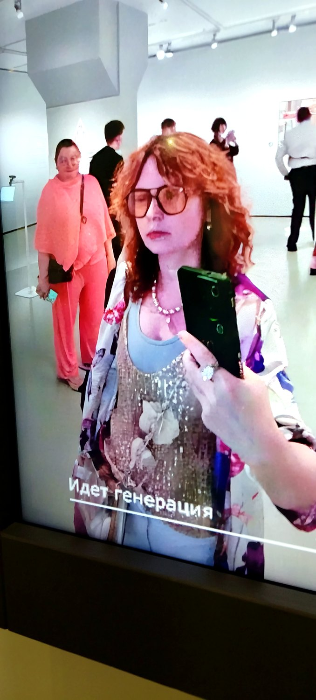
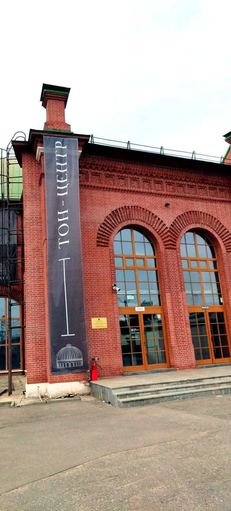
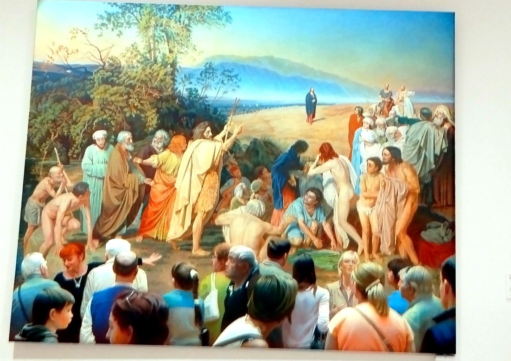
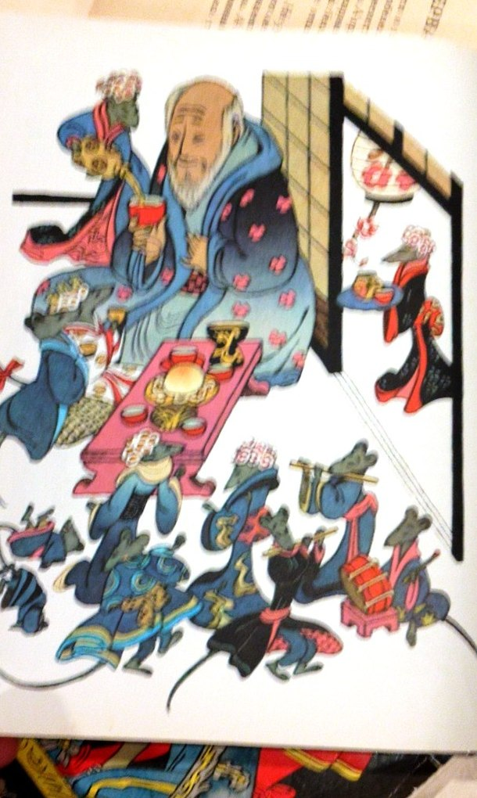
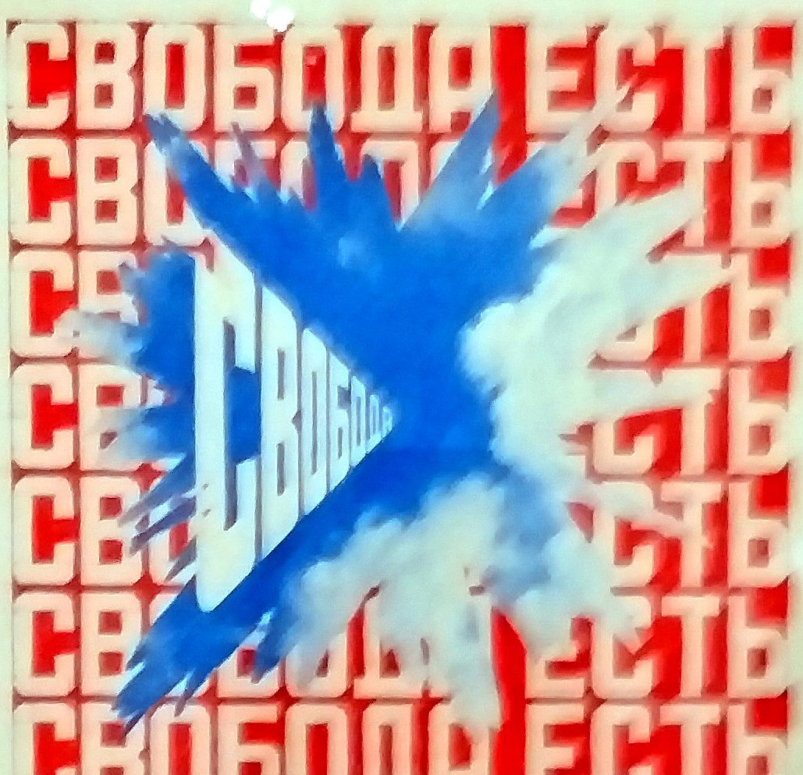

Гайз, у меня есть теория заговора. Сейчас расскажу.
Вчера мы с Леной устроили подвиг. Не в переносном смысле — у нас это так и называется, подвиг. По выходным собираемся и идем в поход по искусству. Вчера нас было четверо: я, Лена и еще две смелые героини — Ксюша Тугеева и Настя Булаева (режиссер и продюсер нашего фильма). (Если, дочитав, захотите с нами — приглашаю. Но помните: это для выносливых и увлеченных, не каждому по силам.)

Мы ходим в эти подвиги не за картинками. Мы ходим за собой: искусство переспрашивает, кто ты, — и домой возвращаешься немного другим человеком. Лена ведет глубинный анализ, я гоняюсь за личными историями художников. Обычное дело.
Пушкинский: кто из них что написал
Начали с Пушкинского. «Ларионов. Гончарова. Начало» — их самый ранний период. Я обожаю Ларионова. Лена — Гончарову. Каждая пришла к своему, идеально.
И тут случилось странное. Стою перед ранними работами и не могу понять, кто из двоих что написал. Убери подписи — один человек. Одна рука, один глаз, одно дыхание.
Моя бунтарская голова, само собой, тут же выкатила версию: а подписи-то настоящие? Может, это шутка на двоих? Может, все писал один, а второй просто расписывался рядом и хихикал?
Ладно, ладно. Отодвигаю теорию заговора (с трудом) и иду искать улики. И, кажется, поймала. Ларионов пишет не вещи, а образы вещей. Не кошку — образ кошки. У него все чуть абстрактнее, будто предмет уже наполовину стал идеей. А Гончарова более земная и фигуративная: у нее истории, ситуации, люди в моменте.
Так что нет, не один человек. Двое. Просто в начале они дышали в такт. И если вдуматься, это вопрос про идентичность: где заканчивается один человек и начинается другой.
МАММ: дежавю и книги в меду
Дальше был МАММ. Подробный разбор — за Леной, дождитесь ее текста, там глубоко. А меня там накрыло странное дежавю: стою и чувствую, будто все это уже видела — когда-то, где-то. И весь зал думала об одном: сколько во мне «моего», а сколько — насмотренного, впитанного, чужого. (Тоже про идентичность. От нее в этот день было не спрятаться.)
А еще там была работа, от которой я надолго зависла, — «Книги в меду» Григория Ерицяна. Художник складывает книги в ящики и заливает медом: так они и хранятся, а мед от книг темнеет. Сколько же в этом смыслов. Мир стал таким цифровым — все удобно и при этом хрупко, — а тут акациевый мед вдруг кажется самым надежным хранилищем на свете. Да и просто эстетически это невероятно красиво. Я получила настоящее наслаждение.
Тон-центр: половина парадной Москвы
Потом — новое пространство, Тон-центр. Скажи сегодня «Тон» — все думают про криптовалюту. А вообще-то Тон — это Константин Тон, архитектор, которому мы обязаны половиной парадного: Храм Христа Спасителя, Большой Кремлевский дворец, Оружейная палата и два вокзала-близнеца — Ленинградский в Москве и Московский в Петербурге. А почему этот центр — вообще магия и серендипити, расскажет Лена. И, кажется, позовет туда на что-нибудь. Место того стоит.

На десерт — Эрик
А на десерт был он — Эрик. Эрик Булатов, известнейший русский художник, один из отцов соц-арта. Ретроспектива в РОСИЗО — и вот тут накрыло по-настоящему.

Правда, Булатова совсем немного, собрали будто с миру по нитке. Обидно: наследие такого масштаба заслуживает большого отдельного дома, а не крупиц.
Я его очень люблю. И у меня с ним прямая связь — через одно рукопожатие. Все благодаря моей дорогой Оле Погасовой: она курировала проект Булатова в Выксе, ту гигантскую фреску «Стой — иди. Амбар в Нормандии» на стене металлургического завода. Оля была куратором, а я приезжала помогать с координацией арт-событий. Пропустить эту встречу я не могла.
Четвертый музей за день, ноги гудели — но я жаждала встречи с Эриком. И он не подвел.
Во-первых, детские иллюстрации. Мало кто помнит, что художник «Славы КПСС» и огромного неба с буквами десятилетиями рисовал детские книжки. Нежные, светлые. Совсем другой человек. Или все-таки тот же?
Во-вторых, японская гравюра. Мы с Настей вдруг увидели ее повсюду — и в тех иллюстрациях, и в графике, и в живописи. А потом до меня дошло: его короткие слова на холстах — «Иду», «Вперед», «Свобода» — это же хокку. Три слова, а внутри целый простор.

И, в-третьих, «Свобода есть». Слово «свобода» сейчас не то чтобы приветствуют, художники самоцензурируются. Эрика уже нет с нами — но он сказал это смело, а музей взял и повесил. Свобода есть.

Тайная вечеря и книги, которые не унести
После мы с Настей заглянули в винный бар-ресторан «Компаньон» — на Тайную вечерю. (Не обижайтесь на шутку.) Концепция: один длиннющий стол на всех, отдельных столиков нет, вдоль всего стола — церковные свечи, вокруг — сводчатые арки из выбеленного кирпича. Впечатлилась. И было вкусно.
А потом — вновь открывшееся «Озеро», магазин арт-книг, кажется, в самом старом доме на свете. Набрали книг, нафотографировали то, что уже не унести.
И замкнули кольцо: пешком вернулись на Гоголевский, через мою любимую летнюю Москву. Обессиленные, но довольные.
Кто я
Вот такой подвиг. Четыре женщины, четыре музея — и весь день, куда ни повернись, один и тот же вопрос: кто я. Ларионов с Гончаровой, дежавю в МАММ, «Книги в меду», «свобода» Булатова — все про это. Кажется, за этим мы в подвиги и ходим.
А дальше буду делиться короткими видео из этого похода — тем, что не поместилось в слова.
Мы делаем такие подвиги регулярно, по выходным. Хотите в следующий — с нами? Напишите нам или бросьте в комментарии «я в деле».
#Булатов #ЭрикБулатов #Ларионов #Гончарова #Пушкинскиймузей #РОСИЗО #МАММ #КнигиВМеду #современноеискусство #русскийавангард #идентичность #арткоучинг #музеиМосквы #выставкиМосквы #подвиг #серендипити #искусство